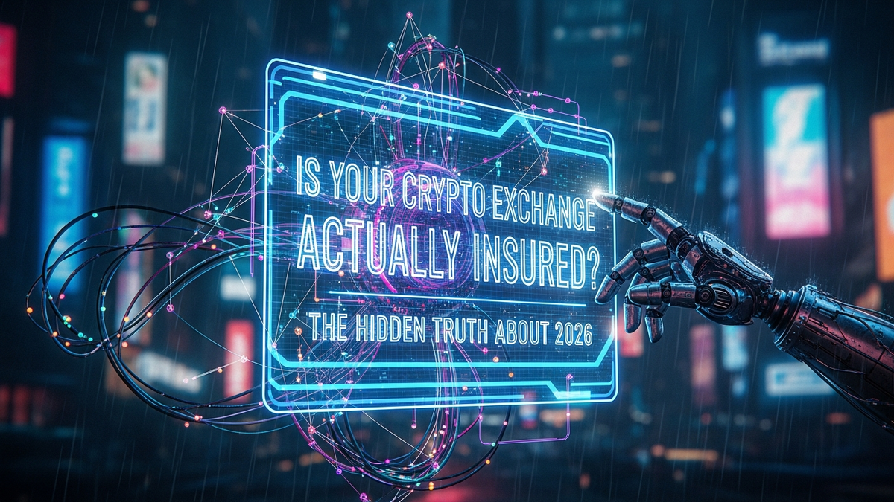

Alright, settle in. We need to talk about something crucial that most people in crypto either misunderstand or completely ignore: insurance. You see headlines, you hear whispers, and maybe your exchange even flashes a little badge saying "insured." But what does that *really* mean? As someone who's spent 15 years knee-deep in servers, networks, and battling cyber threats, I'm here to strip away the marketing fluff and give you the brutal, honest truth. This isn't about fear-mongering; it's about being smart with your hard-earned assets. We're going to pull back the curtain on what protection you actually have, and why a lot of folks are looking at 2026 with the wrong expectations.
Let's get one thing straight right off the bat: your crypto exchange is not a bank. Period. When you put your money into a traditional bank account, it's typically insured by a government entity like the FDIC in the US or similar schemes globally. This means if the bank goes belly-up, your deposits are protected up to a certain limit. That safety net is massive, robust, and legally mandated. In the crypto world? Not so much.
The term "insured" in crypto is usually a marketing blurb designed to make you feel safe. What it almost always refers to is a specific type of insurance policy covering *the exchange's hot wallets* against *cybercrime*, like a hacking incident. Imagine a bank vault. The FDIC insures the money *inside* the vault. Crypto exchange insurance often only covers a small portion of the money that's *currently in the teller's till* – the hot wallet. This "till" is needed for daily transactions, but it's a tiny fraction of the exchange's total holdings, which are mostly kept offline in "cold storage." Cold storage is like the main bank vault, which is rarely, if ever, covered by these policies.
This hot wallet insurance is a good thing, don't get me wrong. It means if a hacker breaches the exchange's immediate operational funds, there's a chance those specific funds might be replaced. But it does absolutely nothing for the vast majority of assets held in cold storage, which is where most of your crypto likely resides. More importantly, it offers zero protection against the biggest risks: the exchange going insolvent, internal fraud (a "rug pull" by the exchange itself), or simply mismanagement. If the exchange's business model collapses, or if their executives run off with funds, that hot wallet insurance is completely useless to you. Think of it like a small fire extinguisher in a massive building; it might put out a small blaze, but it won't save the structure from a total collapse. You're essentially trusting a private company with your assets, often with very little recourse if they fail outside of a very narrow set of circumstances.
The "insurance" is bought by the exchange, for the exchange, to mitigate *their* risk, not necessarily *your* full risk. It's a business expense for them. They're protecting their operational liquidity, not providing a blanket guarantee on all customer deposits. This distinction is critical. Your funds are commingled with millions of other users' funds, and any payout from this limited policy would be shared, often leaving individual users with a fraction of their losses. It’s a far cry from the direct, individual account protection offered by traditional financial institutions.
💡 Expert IT Tip: When an exchange claims insurance, don't just take their word for it. Dig into their Terms of Service (ToS) or security page. Look for the specific underwriter (e.g., Lloyd's of London syndicate), the exact policy type (e.g., "crime insurance"), and most importantly, the *maximum coverage amount* and *what assets are covered*. If they don't explicitly state cold storage is covered, assume it isn't. If they don't list an underwriter or a specific policy, be extremely wary.
You've heard it, I've heard it: "By 2026, crypto will be regulated," or "Exchanges will be fully insured by 2026." Let's clear the air. There's no global, universally agreed-upon crypto insurance mandate kicking in on January 1, 2026. This isn't a hard deadline for a magical crypto FDIC. The "2026" talk is a blend of several factors: the maturation of specific regulations, the general pace of legislative bodies, and a touch of wishful thinking.
The most significant driver behind the "2026" buzz, particularly in Europe, is the Markets in Crypto-Assets (MiCA) regulation. MiCA is a landmark piece of legislation designed to create a comprehensive regulatory framework for crypto assets. While parts of MiCA are rolling out earlier, some of the more complex provisions, especially those related to stablecoins and other aspects requiring significant operational changes from crypto service providers, are slated to become fully applicable by late 2024 or mid-2025. The full impact and subsequent market adjustments, including potential new insurance products or requirements, could easily extend into 2026 as the industry adapts and regulators fine-tune enforcement. It's a phased rollout, not an overnight flip of a switch.
Globally, other jurisdictions are watching MiCA closely and developing their own frameworks. The US, for example, is still grappling with how to classify various crypto assets, which directly impacts how they might be regulated and insured. The legislative process is notoriously slow. So, while there's a clear trend towards more regulation and a push for greater consumer protection, 2026 is more of a marker for when we might see significant *progress* and *implementation* of these new rules, rather than a definitive "everything is insured" date. It's the year when many of the larger institutional players, who demand more traditional safeguards, expect to see a more stable and predictable regulatory environment.
This means we'll likely see more pressure on exchanges to demonstrate robust security, proper auditing, and potentially, more substantial insurance policies. However, these policies will still be driven by market demand and the willingness of insurance providers to underwrite such volatile and complex risks. Comprehensive, bank-like insurance for all crypto assets is still a distant dream, if it ever materializes in the same form. The "2026" narrative is best understood as a general expectation for increased regulatory clarity and market maturity, not a guarantee of individual asset protection. It's a goalpost for *some* changes, not a finish line for *all* risks.
Let's be brutally honest about what those "insurance" policies on crypto exchanges typically leave out. It's a much longer list than what they actually cover, and it's where most people get burned. First and foremost, almost no exchange insurance covers *your mistakes*. If you fall for a phishing scam and give away your login credentials, that's on you. If you send crypto to the wrong address, that transaction is usually irreversible and uninsured. If your personal computer is hacked and your wallet drained because you used a weak password or didn't enable 2FA, the exchange's insurance won't help you. This is a massive blind spot, as user-side vulnerabilities are a huge vector for crypto theft.
Next, and perhaps most critically, exchange insurance rarely covers *insolvency or internal fraud*. This means if the exchange itself collapses due to poor management, goes bankrupt, or if the founders pull a "rug pull" (steal funds and disappear), you are almost certainly out of luck. The insurance policies are usually structured to protect against external cyberattacks, not the fundamental business failure or malicious intent of the platform you're trusting. Think of FTX – no amount of hot wallet insurance would have saved users from that catastrophic internal mismanagement and alleged fraud. Your assets were gone because the company failed, not because of an external hacker.
Furthermore, market volatility is never covered. If the price of your Bitcoin drops 50% overnight, that's just the nature of the market, and there's no insurance for investment losses. Smart contract bugs, unless explicitly covered by a very specialized and rare policy, are also typically not included. If a decentralized finance (DeFi) protocol that your exchange interacts with has a vulnerability that leads to asset loss, the exchange's general crime insurance won't kick in. The policies are often limited in scope, covering only specific types of "criminal acts" as defined by the insurer, which might not include every possible scenario leading to loss.
Finally, the size of these policies is often a drop in the bucket compared to the total value of assets held. An exchange might boast a $100 million insurance policy, but if they custody $10 billion in assets, that policy covers only 1% of their holdings. If a major event occurs, that limited pool of funds would be distributed proportionally, leaving everyone with a fraction of their losses. It's a shared, finite resource, not an individual guarantee. This limited coverage, combined with the major exclusions, means relying solely on exchange insurance is a dangerous gamble for anything more than trivial amounts of crypto.
Since exchange insurance is a leaky bucket, it's time to build your own fortress. This isn't optional; it's fundamental. The number one rule in crypto security is "Not your keys, not your crypto." This means if you don't hold the private keys to your wallet, you don't truly own the assets. They are held by a third party – the exchange – and you are exposed to all their risks. The solution? Self-custody for any significant amount of crypto.
Secure your digital wealth with the world's most trusted hardware wallets.
GET YOUR WALLET NOWA hardware wallet is your best friend here. Think of it like a highly secure, offline bank vault for your digital assets. Devices like Ledger or Trezor store your private keys in an isolated, secure chip, completely disconnected from the internet when not in use. This makes them virtually impervious to online hacks. You connect it only when you need to make a transaction, confirm the details on the device itself, and then disconnect it. It's an upfront cost, but it's the single best investment you can make for your crypto security. For smaller amounts that you actively trade, keeping them on a reputable exchange might be practical, but anything you're holding long-term should be in your hardware wallet.
Beyond hardware wallets, diversification is key if you absolutely must use exchanges. Don't put all your eggs in one basket. If you have funds on exchanges, spread them across two or three different, highly reputable platforms. This mitigates the risk of a single exchange failure. Always enable every single security feature offered by your exchange. This means strong, unique passwords (use a password manager!), and absolutely, positively use Two-Factor Authentication (2FA) – preferably an authenticator app like Authy or Google Authenticator, not SMS-based 2FA, which is vulnerable to SIM-swapping attacks. Also, enable withdrawal whitelisting, which restricts withdrawals to only pre-approved addresses after a waiting period. This is an extra hurdle for a hacker, giving you time to react.
Finally, educate yourself. Understand how phishing attacks work. Never click suspicious links. Verify wallet addresses multiple times before sending funds. Back up your hardware wallet seed phrase securely, offline, and in multiple physical locations (e.g., metal plate, fireproof safe). This seed phrase is the master key to your crypto; if you lose it, your crypto is gone forever. If someone else finds it, your crypto is gone forever. Treat it with the utmost paranoia. Your personal security practices are your primary line of defense, far more effective than any limited exchange insurance policy.
💡 Expert IT Tip: For ultimate seed phrase security, consider stamping or engraving it onto a durable metal plate (like stainless steel or titanium) instead of writing it on paper. Paper can degrade, burn, or be easily damaged. Store this plate in a fireproof safe, ideally in a separate location from your hardware wallet. Never store it digitally or take a photo of it. Your seed phrase is your lifeline; treat it like gold.
The crypto world isn't static, and neither is the quest for better protection. While a universal, bank-like insurance scheme is still a long way off, several trends are pushing the industry towards more robust solutions. Regulation, as discussed with MiCA, is a major force. As governments worldwide establish clearer rules for crypto assets, exchanges and other service providers will be compelled to meet higher standards for security, transparency, and accountability. This will likely lead to more standardized auditing practices, stricter capital requirements, and potentially, new categories of insurance products that are tailored to crypto's unique risks. These regulations won't necessarily guarantee your funds, but they will make the operating environment safer and more transparent.
Another fascinating development is the emergence of decentralized insurance protocols. These platforms, often built on blockchain technology, allow users to pool funds and collectively underwrite specific risks, such as smart contract vulnerabilities or exchange hacks. Projects like Nexus Mutual or Etherisc operate on a peer-to-peer model, where members pay premiums to cover potential losses, and claims are voted on by the community. This offers a different kind of safety net, one that is often more transparent and less reliant on traditional, centralized insurers. However, these are still relatively new, carry their own risks (like smart contract bugs in the insurance protocol itself), and may not have the deep pockets of a traditional insurer for massive payouts.
For institutional players – the big banks, hedge funds, and corporations entering crypto – specialized custody solutions are becoming the norm. Companies like Coinbase Custody, Fidelity Digital Assets, or BitGo offer highly secure, often regulated, and sometimes *partially* insured cold storage solutions tailored for large institutional clients. These services typically involve multi-signature wallets, advanced physical security, and bespoke insurance policies that are far more comprehensive than what's available to individual retail users. This institutional demand is a major driver for the broader maturation of the crypto security and insurance landscape, as traditional finance demands traditional levels of security and accountability.
While these solutions are evolving, they highlight a future where different levels of protection will be available for different users and different needs. Retail users will still need to prioritize self-custody, but the regulatory push and the development of decentralized and institutional-grade solutions point towards a future with more options and potentially, greater overall safety. It's a slow, incremental march, not a sudden leap, but the direction is clear: towards more defined and accountable protection mechanisms.
Alright, let's get practical. An exchange claims to be insured. How do you cut through the marketing jargon and find out what's *really* going on? It requires a bit of detective work, but it's essential. Your first stop should always be the exchange's official website. Look for sections titled "Security," "Legal," "Terms of Service," "Insurance," or "About Us." Often, the relevant details are buried deep in the fine print.
What are you looking for? Specifics, not vague statements. First, identify the *underwriter*. Is it a reputable insurance provider like a syndicate at Lloyd's of London, or is it an obscure, unknown entity? If they don't name the underwriter, that's a red flag. Second, look for the *type of policy*. Most commonly, you'll see "crime insurance" or "specie insurance." Understand what these cover: typically, theft of assets from hot wallets due to external cyberattacks. They almost never cover internal fraud, insolvency, or user error.
Third, find the *coverage amount*. How much is the total policy worth? An exchange with billions in assets and only a $100 million policy isn't providing much comfort. Crucially, does the policy explicitly state it covers *cold storage*? The vast majority do not. If it's not explicitly mentioned, assume it's only hot wallet coverage. Many exchanges use third-party custodians (like Coinbase Custody) for their cold storage and might claim *that custodian* has insurance. This is different from the exchange itself having a blanket policy. You need to understand whose insurance is actually applying to your assets and under what circumstances.
Finally, read the exclusions. This is often the most important part. What specific events or scenarios are explicitly *not* covered? This is where you'll find the loopholes. Be wary of phrases like "industry-leading insurance" without any specific details to back it up. If an exchange simply says "your assets are insured" without providing names, policy types, or coverage amounts, they're being intentionally vague. This isn't transparency; it's obfuscation. If you can't find clear, verifiable information after a thorough search, consider that exchange to be effectively uninsured for your purposes. Your diligence here could save you from a catastrophic loss down the road.
So, there you have it. The truth about crypto exchange insurance isn't pretty, but it's vital. Most exchanges offer a limited safety net, primarily for hot wallet hacks, and absolutely not for the biggest risks like insolvency or your own operational blunders. The "2026" narrative is about regulatory maturation, not a magic date for universal protection.
Your ultimate security rests with you. Self-custody, hardware wallets, strong personal security practices, and a healthy dose of skepticism are your best defenses. Don't rely on vague promises or marketing fluff. Understand the real risks, take control of your assets, and build your own digital fortress. The crypto world is an exciting frontier, but it demands personal responsibility above all else. Stay sharp, stay safe.
Don't wait for the headlines. Our Private Telegram Channel delivers real-time AI security updates and digital wealth strategies before they go viral. Stay protected. Stay ahead.
⚡ JOIN THE 1% NOWNo sign-up required. Instantly check risks, analyze AI text, or calculate your digital finances.